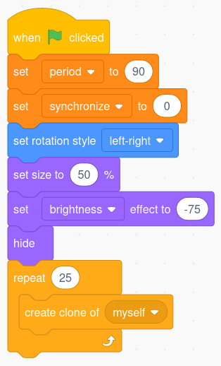

risorse | lucciole in scratch
Questo progetto vuole esemplificare un comportamento emergente. Un sistema complesso, composto da più componenti identici, esibisce un comportamento emergente quando presenta delle proprietà non derivabili dalle leggi che governano il singolo componente. Di modelli di tali sistema ne esistono diversi, tra tutti vale la pena di citare Boids e Ant colony. Qui prendo in esame la sincronizzazione dei lampeggi in uno sciame di lucciole: alcune (poche) specie di lucciole hanno infatti la capacità di sincronizzare l'emissione dei propri impulsi luminosi con quelli degli insetti vicini. La sincronizzazione si ottiene con l'applicazione di due semplici regole:
Per trasformare Scratch in una lucciola bisogna innazitutto ridurne le dimensioni; lo sprite dovrà poi muoversi lentamente in giro per lo schermo:
Il codice che regola il movimento della lucciola.
Il lampeggio è controllato da un orologio interno realizzato con un contatore che viene incrementato dopo ogni movimento; quando raggiunge un certo valore, da stabilire sperimentalmente, la lucciola emette il lampeggio e il contatore viene azzerato. Poiché inizialmente ogni lucciola avrà il suo orologio interno regolato in modo diverso, la variabile counter dev'essere definita come variabile di Sprite:
Il contatore è una variabile locale.
Il contatore va azzerato all'inizio del programma e incrementato all'interno del ciclo. Sperimentalmente si ricava il valore che raggiunge dopo 3-5 secondi, dato che questa è approssimativamente la frequenza di lampeggio delle lucciole:
Il programma per la determinazione della frequenza di lampeggio.
Le prove suggeriscono il valore massimo per il contatore attorno al 90. Per comodità conviene memorizzare questo parametro in una variabile globale apposita, denominata period. Il lampeggio si ottiene agendo sulla luminosità dello sprite:
Il codice della lucciola.
Questa è l'occasione per aggiungere uno sfondo notturno, per esempio
È giunto il momento di moltiplicare il numero di lucciole: lo sprite principale si occupa di creare 25 cloni, ognuno dei quali in una posizione diversa, che punta in direzione diversa, e con il contatore impostato in modo diverso:
Il codice dei cloni.
Le lucciole ora lampeggiano con la stessa frequenza ma sono tutte fuori fase. È necessario che ogni lucciola notifichi le altre sue compagne che ha appena emesso un lampeggio; ciò si può ottenere per esempio con l'invio di un messaggio. Per avere il massimo controllo della simulazione conviene introdurre una variabile globale synchronize a valori [0, 1] che dà il consenso all'invio del messaggio:
La variabile di controllo della simulazione.

L'invio del messaggio è vincolato al valore della variabile synchronize.
Quando un clone riceve la notifica che una lucciola ha appena emesso il lampeggio deve innanzitutto escludere che si tratti del proprio lampeggio; per questa ragione le notifiche ricevute quando il contatore interno è a zero vengono ignorate. La distinzione "sta per lampeggiare"/"ha appena lampeggiato" avviene sulla base del valore del contatore interno: se il suo valore è inferiore alla metà del valore massimo, allora si è nella condizione "ha appena lampeggiato", se invece lo supera allora si assume di essere nella condizione "sta per lampeggiare". Alla luce di queste considerazioni, il codice che regola l'emissione del lampeggio di ogni singola lucciola diventa:
Il codice che realizza la sincronizzazione.
Per comodità conviene porre la variabile synchronize a zero all'inizio del programma:
Inibizione della sincronizzazione.
In questo modo le lucciole ignorano gli stimoli provenienti dalle loro compagne e ognuna lampeggia nel rispetto del proprio orologio interno. Nel momento in cui si attiva la sincronizzazione si assisterà ad un progressivo rifasamento dei lampeggi e in breve tempo tutte le lucciole emetteranno il lampeggio contemporaneamente.
L'aspetto cruciale che questa simulazione mette in evidenza è che la sincronizzazione generalizzata che si raggiunge in breve tempo non è guidata da una lucciola "capo" o da un orologio condiviso esterno, ma è effetto del meccanismo locale messo in atto da ognuna delle lucciole.
Il progetto Scratch 3 completo è scaricabile qui.
Pagina modificata il 07/11/2021